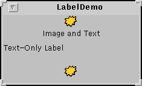
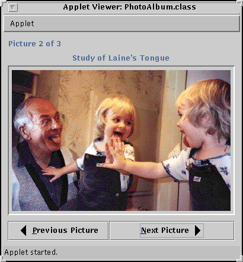

Feedback Form
|
|
Start of Tutorial > Start of Trail > Start of Lesson |
Search
Feedback Form |
Some Swing components, such asJLabelandJButton, can be decorated with an icon -- a fixed-sized picture. An icon is an object that adheres to theIconinterface. Swing provides a particularly useful implementation of the
Iconinterface:ImageIconHere's a snapshot of an application that decorates two labels with an icon:
 The program uses one image icon to contain and paint the yellow splat. One statement creates the image icon and two more statements include the image icon on each of the two labels:The first argument to theImageIcon icon = new ImageIcon("images/middle.gif", "a pretty but meaningless splat"); ... label1 = new JLabel("Image and Text", icon, JLabel.CENTER); ... label3 = new JLabel(icon);ImageIconconstructor specifies the file to load, relative to the directory containing the application's class file. The second argument provides a description of the icon, to be used by assistive technologies. This description might be used, for example, to help a visually impaired user understand what information the icon conveys.Applets generally load image data from the computer that served up the applet. There are two reasons for this. First, untrusted applets can't read from the file system on which they're running. Second, it just makes sense to put an applet's class and data files together on the server. To load image data from the server, an applet uses a URL as shown in the following example:
If you're writing an applet, you might want to copy thepublic class SomeClass extends JApplet ... { protected String leftButtonFilename = "images/left.gif"; ... public void init() { ... URL leftButtonURL = getURL(leftButtonFilename); ... leftButtonIcon = new ImageIcon(leftButtonURL, "an arrow pointing left"); ... } ... protected URL getURL(String filename) { URL codeBase = getCodeBase(); URL url = null; try { url = new URL(codeBase, filename); } catch (java.net.MalformedURLException e) { System.err.println("Couldn't create image: " + "badly specified URL"); return null; } return url; } ... }getURLmethod for use in your applet. For more information on specifying the source of image data, see Specifying the Image Source.
When you specify a filename or URL to an
ImageIconconstructor, the constructor returns only after the image data is completely loaded. Thus, you can be sure that the image icon is usable following the call to the constructor. If you want more information while the image is loading, you can register an observer on an image icon by calling itssetImageObservermethod.Under the covers, each image icon uses an
ImageMediaTrackerImageobjects, image observers, media trackers, and other image topics, see Using Images.
The rest of this section covers the following topics:
Here's an applet that uses eight image icons. In the snapshot, you can see three of them: one displays the photograph and two decorate the buttons at the bottom of the applet window with small arrows.
This is a picture of the applet's GUI. To run the applet, click the picture. The applet will appear in a new browser window.
Try this:
- Run the applet. For information on running applets, see Running Swing Applets.
The main source code for the program isIconDemoApplet.java. You will also need a few other source files and several image files. See the examples index for links to all the files required by this example.
- Click the Previous Picture and Next Picture buttons to view the photographs.
- Hold the mouse over a photograph. A tool tip appears that indicates the filename of the current photograph and its width and height.
- To view your own photographs, modify the applet parameters. Here's the applet tag used for the applet running above:
<applet code="IconDemoApplet.class" codebase="example-swing/" archive="icon.jar" width="400" height="360"> <param NAME="IMAGEDIR" VALUE="images"> <param NAME="IMAGE0" VALUE="stickerface.gif"> <param NAME="CAPTION0" VALUE="Sticker Face"> <param NAME="WIDTH0" VALUE="230"> <param NAME="HEIGHT0" VALUE="238"> ... <applet>TheIMAGEDIRparameter indicates that the image files should be in a directory namedimagesrelative to the applet's codebase. Four parameters are required for each photograph and the applet uses four photographs. The tag shown above shows the parameters for only the first photograph.
Most often, an image icon's data comes from an image file. You can specify the location of the file with either a filename or a
URLYou've already seen how to specify a filename relative to the directory containing the application's class files. To specify a URL relative to an application's class path, you can use the
ClassLoadergetSystemResourcemethod. Here is an example:TheImageIcon icon = null; URL iconURL = ClassLoader.getSystemResource("images/middle.gif"); if (iconURL != null) { icon = new ImageIcon(iconURL, "a beautiful yet meaningless icon"); }getSystemResourcemethod looks through the directories and JAR files in the program's class path, returning a URL as soon as it finds the desired file. For example, assume that you put a JAR file namedicons.jarin your program's class path. If the JAR file containsimages/middle.gif, then the class loader will definitely return a URL forimages/middle.gif. However, the URL might not be relative toicons.jar, if another JAR file or directory in the class path containsimages/middle.gif. The URL will point to the first JAR file or directory in the class path that containsimages/middle.gif.The
IconDemoAppletprogram initializes each of its image icons from GIF files whose locations are specified with URLs. BecauseIconDemoAppletis designed to be an untrusted applet, we must place the image files under the applet's code base. The following figure shows the locations of files forIconDemoApplet.
Note: Applets are supposed to be able to load images from JAR files. Currently, however, some browsers can't read images from a JAR file, although they do successfully get classes from a JAR file. With our applets, we currently hedge our bets by both putting the image files in the applet's archive file (the JAR file containing the applet's class files) and by putting the image files in the file system on the server. The figure above depicts our setup.
Because the photograph images are large and because the applet uses multiple images,IconDemoAppletuses several techniques to improve the performance of the program as perceived by the user.As with all performance-related issues, these techniques work in some situations and not others. These are not general recommendations for all programs, but some techniques you can try to improve the user's experience. Furthermore, the techniques described here are designed to improve the program's perceived performance, but don't necessarily impact its real performance.
- Providing dimmed icons -- The applet provides dimmed versions of the arrows for the buttons:
Without this code, the dimmed versions of the arrows would be computed, which causes a slight delay the first time each button is dimmed. Basically, this technique trades a noticeable delay when the user clicks the buttons for a smaller, less noticeable delay in theimagedir = getParameter("IMAGEDIR"); if (imagedir != null) imagedir = imagedir + "/"; ... ImageIcon dimmedNextIcon = new ImageIcon( getURL(imagedir + "dimmedRight.gif")); ImageIcon dimmedPreviousIcon = new ImageIcon( getURL(imagedir + "dimmedLeft.gif")); ... nextButton.setDisabledIcon(dimmedNextIcon); ... previousButton.setDisabledIcon(dimmedPreviousIcon);initmethod.This applet uses four separate image files just to display arrows on two buttons. The performance impact of these little images can add up, especially if the browser in which the applet is running uses a separate HTTP connection to load each one. A better alternative is to implement a custom
Iconthat paints the arrows. See Creating a Custom Icon Implementation for an example.
- Lazy image loading -- The applet's initialization code loads only the first photograph. Each other photograph gets loaded when the user first requests to see it. By loading images if and when needed, the applet avoids a long initialization. The downside is that the user has to wait to see each photograph. We try to make this wait less noticeable by providing feedback about the image loading and allowing the user to use the GUI while the image is loading.
Not all programs can benefit from lazy loading. For example, the
TumbleItem.java
- Background image loading -- The applet uses a
SwingWorkerto load each photograph image in a background thread. Because the image is loaded in a separate thread, the user can still click the buttons and otherwise interact with the applet while the image is loading.Here's the code to load each image:
Theprivate void loadImage(final String imagePath, final int index) { final SwingWorker worker = new SwingWorker() { ImageIcon icon = null; public Object construct() { icon = new ImageIcon(getURL(imagePath)); return icon; } public void finished() { Photo pic = (Photo)pictures.elementAt(index); pic.setIcon(icon); if (index == current) updatePhotograph(index, pic); } }; worker.start(); }constructmethod, which creates the image icon for the photograph, is invoked by the thread that's created by theSwingWorkerconstructor and started by thestartmethod. After the image icon is fully loaded, thefinishedmethod is called. Thefinishedmethod is guaranteed to execute on the event-dispatching thread, so it can safely update the GUI to display the photograph.
- Status updates -- While the image is loading in the background, the applet displays a status message:
This lets the user know that the program is doing something. After the image is loaded, the applet displays the photograph in the viewing area.photographLabel.setIcon(null); photographLabel.setText("Loading image...");
- Caching -- After each photograph is viewed for the first time, the applet caches the image icon for later use. Thus if the user revisits a photograph, the program can use the same image icon and display the photograph quickly.
If you write a program without caching image icons, it may appear that some implicit image caching is going on within the Java platform. However, this is a side effect of the implementation and is not guaranteed. If your program uses one image many times, you can create the image icon once and use the same instance multiple times.
If you use a simple image repeatedly, consider implementing a customIconclass to paint the image. The really nice thing about a custom icon is that you can easily change the icon's appearance to reflect its host component's state.Look-and-feel implementations often use custom icons. For example, the Metal Look & Feel uses a single
MetalCheckBoxIconobject to paint all of the check boxes in the GUI. TheMetalCheckBoxIconpaints itself differently depending on whether its host component is enabled, pressed, or selected.In this section, we'll convert a program called
ButtonDemoso that it uses a custom icon to paint these two arrows:You can see a picture of
ButtonDemoin How to Use the Common Button APIButtonDemo.javaButtonDemouses the following code to load the arrows from GIF files and put the arrows into buttons:Here is the new code, which uses a custom icon class namedImageIcon leftButtonIcon = new ImageIcon("images/right.gif"); ... ImageIcon rightButtonIcon = new ImageIcon("images/left.gif"); b1 = new JButton("Disable middle button", leftButtonIcon); ... b3 = new JButton("Enable middle button", rightButtonIcon);ArrowIcon. Only the bold lines have changed. You can find the entire program inCustomIconDemo.javaYou can find the implementation of the custom icon class inIcon leftButtonIcon = new ArrowIcon(SwingConstants.RIGHT); ... Icon rightButtonIcon = new ArrowIcon(SwingConstants.LEFT); b1 = new JButton("Disable middle button", leftButtonIcon); ... b3 = new JButton("Enable middle button", rightButtonIcon);ArrowIcon.javaNote that the icon sets the current color. If you don't do this, then the icon's painting might not be visible. For more information about performing custom painting, see Working with Graphicsclass ArrowIcon implements Icon, SwingConstants { ... public void paintIcon(Component c, Graphics g, int x, int y) { int length = xPoints.length; int adjustedXPoints[] = new int[length]; int adjustedYPoints[] = new int[length]; for (int i = 0; i < length; i++) { adjustedXPoints[i] = xPoints[i] + x; adjustedYPoints[i] = yPoints[i] + y; } if (c.isEnabled()) { g.setColor(Color.black); } else { g.setColor(Color.gray); } g.fillPolygon(adjustedXPoints, adjustedYPoints, length); } }fillPolygonmethod is discussed in Painting ShapesUsing a custom icon to paint the arrows has a few implications:
- Because the icon's appearance is determined dynamically, the icon painting code can use any information -- component and application state, for example -- to determine what to paint.
- Because we specified a non-
ImageIconicon for a button, the button doesn't bother to calculate the dimmed (disabled) version of the icon. Instead, the button lets the icon paint its disabled self. This can reduce computation time and save space that would otherwise be used to hold the dimmed image.- Depending on the platform, we might get a performance boost with custom icons, since painting polygons is often faster than painting images.
- Instead of loading all the GIF files for the arrows (left and right, and perhaps dimmed left and dimmed right), we load a single class file (
ArrowIcon). The performance implications of this depend on factors such as the platform, the size of the files, and the overhead for loading each type of file.
The following tables list the commonly usedImageIconconstructors and methods. Note thatImageIconis not a descendent ofJComponentor even ofComponent.The API for using image icons falls into these categories:
- Setting, Getting, and Painting the Image Icon's Image
- Setting or Getting Information about the Image Icon
- Watching the Image Icon's Image Load
Setting, Getting, and Painting the Image Icon's Image Method or Constructor Purpose ImageIcon()
ImageIcon(byte[])
ImageIcon(byte[], String)
ImageIcon(Image)
ImageIcon(Image, String)
ImageIcon(String)
ImageIcon(String, String)
ImageIcon(URL)
ImageIcon(URL, String)Create a ImageIconinstance, initializing it to contain the specified image. The first argument indicates the source -- image, byte array, filename, or URL -- from which the image icon's image should be loaded. The source must be in a format supported by thejava.awt.Imageclass: namely GIF or JPEG. The second argument, when present, provides a description for the image. The description is a short textual description of the image that could be used in a variety of ways, such as alternate text for the image.void setImage(Image)
Image getImage()Set or get the image displayed by the image icon. void paintIcon(Component, Graphics, int, int)Paint the image icon's image in the specified graphics context. You would do this only if you're implementing a custom component that performs its own painting. The Componentobject is used as an image observer. You can rely on the default behavior provided byComponentclass and pass in any component. The twointargments specify the x and y coordinates, respectively.
Setting or Getting Information about the Image Icon Method Purpose void setDescription(String)
String getDescription()Set or get a description of the image. This description is intended for use by assistive technologies. int getIconWidth()
int getIconHeight()Get the width or height of the image icon in pixels.
Watching the Image Icon's Image Load Method Purpose void setImageObserver(ImageObserver)
ImageObserver getImageObserver()Set or get an image observer for the image icon. int getImageLoadStatus()Get the loading status of the image icon's image. The set of values returned by this method are defined by MediaTracker.
The following table lists just a few of the many examples that useImageIcon.
Example Where Described Notes LabelDemoThis section and
How to Use LabelsDemonstrates using icons in an application's label, with and without accompanying text. IconDemoAppletThis section An applet. Uses a label to show large images; uses buttons that have both images and text. CustomIconDemoThis section Uses a custom icon class implemented by ArrowIcon.javaTumbleItemHow to Make Applets Uses image icons in an animation. Shows how to use ImageIcon'spaintIconmethod.ButtonDemoHow to Use Buttons, Check Boxes, and Radio Buttons Shows how to use icons in an application's buttons. CheckBoxDemoHow to Use Check Boxes Uses multiple GIF images. TabbedPaneDemoHow to Use Tabbed Panes Demonstrates adding icons to tabs in a tabbed pane. DialogDemoHow to Make Dialogs Shows how to use standard icons in dialogs. TreeIconDemoHow to Use Trees Shows how to change the icons displayed by a tree's nodes. ActionDemoHow to Use Actions Shows how to specify the icon in a tool-bar button or menu item using an Action.
|
|
Start of Tutorial > Start of Trail > Start of Lesson |
Search
Feedback Form |